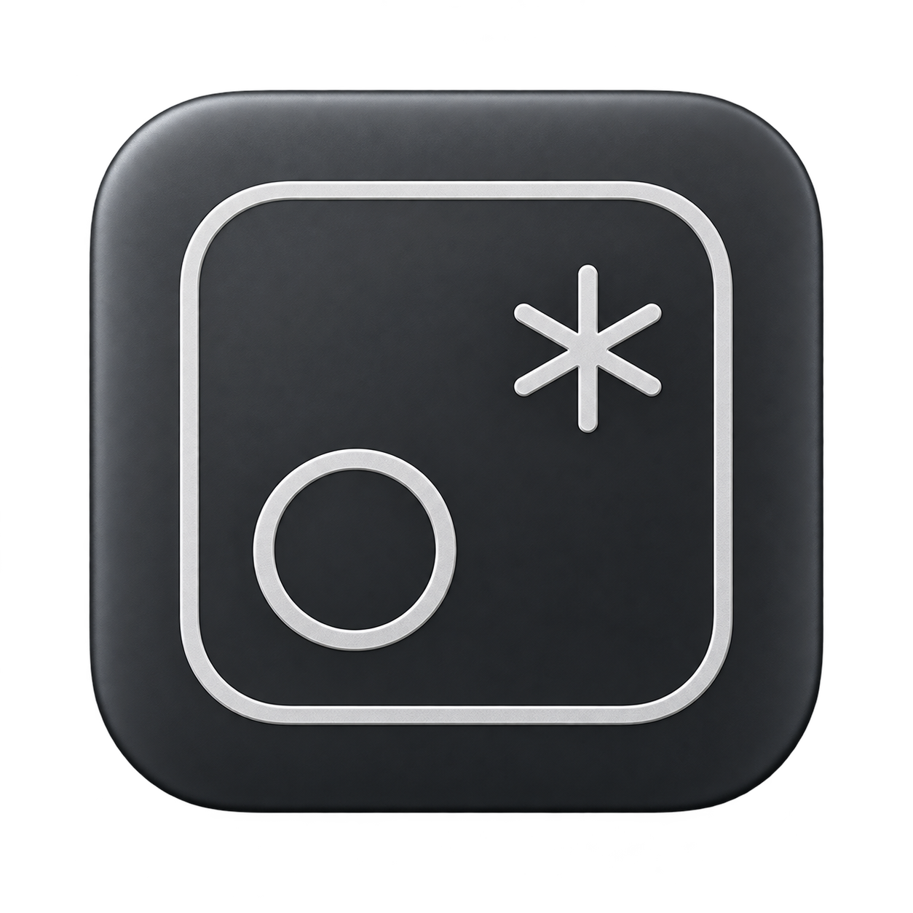
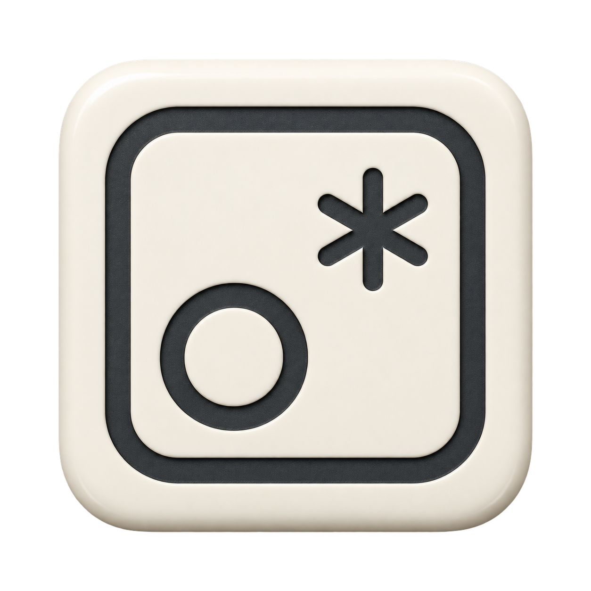
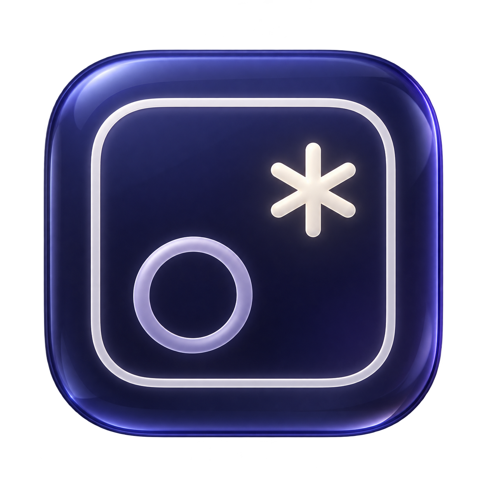

Your square, circle, and spark. Three material treatments for the Dock, shown at the sizes that matter.



Concept images generated with ImageGen. The chosen direction will be adapted into final app assets and a crisp monochrome menu bar mark. Your current icon hasn’t changed.